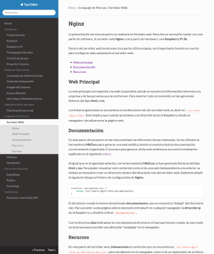
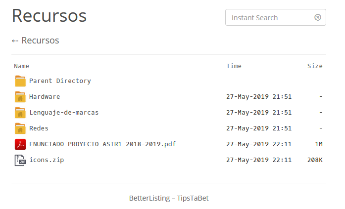
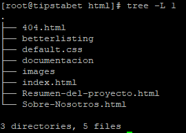

Nginx#
La presentación de este proyecto se realizará en formato web. Para ello es necesario contar con una parte de software, el servidor web Nginx y otra parte de hardware, una Raspberry Pi 3b.
Dentro del servidor web tendremos tres partes diferenciadas, será importante tenerlo en cuenta para configurar adecuadamente el servidor web.
Web Principal#
La web principal corresponde a la web corporativa, donde se muestra la información referente a la empresa y de las personas que la conforman. Para mostrar todo el contenido se han generado ficheros del tipo html y css.
Los ficheros generados se encuentran en el directorio raíz del servidor web, es decir en /usr/share/nginx/html. Esto implica que cuando accedamos a la dirección ip de la Raspberry desde un navegador, visualizaremos la página web.
Documentación#
En esta parte del proyecto se han documentado las diferentes tareas realizadas. Se ha utilizado la herramienta MkDocs para generar una web estática donde se muestra toda la documentación correctamente organizada. El proceso para generar dicha web estática se encuentra totalmente explicado en el siguiente enlace.
Al igual que en el apartado anterior, con la herramienta MkDcos se han generado ficheros del tipo html y css. Para poder visualizar este contenido como si de una web independiente a la anterior se tratase es necesario crear un directorio dentro del directorio raíz del servidor web. Debemos añadir el siguiente bloque al fichero de configuración de Nginx.
1 2 3 | location /documentacion/ { alias /usr/share/nginx/html/documentacion; } |
El directorio creado lo hemos denominado documentacion, que se encuentra "debajo" del directorio raíz. Para acceder a esta página web es necesario introducir en cualquier navegador la dirección ip de la Raspberry y añadirle al final /documentacion/.
Con la directiva alias indicamos la ruta absoluta al directorio virtual que hemos creado, de ese modo no será necesario escribir una dirección "compleja" en el navegador.

Recursos#
En esta parte del servidor web, indexaremos el contenido que se encuentra en /usr/share/nginx/html/documentacion/Recursos para visualizarlo en el navegador como si de un explorador de archivos se tratase. Se ha añadido al fichero de configuración de Nginx el siguiente bloque:
1 2 3 4 5 6 7 8 | location /Recursos/ { alias /usr/share/nginx/html/documentacion/Recursos/; add_before_body /betterlisting/top.html; add_after_body /betterlisting/bot.html; autoindex on; autoindex_localtime on; autoindex_exact_size off; } |
Para que el navegador muestre el contenido de un directorio, únicamente es necesario establecer la directiva autoindex. Por defecto, la forma en la que se muestra el contenido no es visualmente atractiva, por lo que para darle un aspecto más agradable hemos utilizado el proyecto betterlisting que podemos encontrar en gitlab.
Hay varias directivas que no se había visto hasta el momento que explicaremos a continuación:
- autoindex_exact_size off: por defecto esta directiva se encuentra activa. Si la desactivamos nos muestra el tamaño de los ficheros redondeado en KB, MB o GB.
- add_before_body: nos permite añadir contenido antes de cargar el body1 de la solicitud (el contenido a indexar).
- add_after_body: a diferencia de la directiva anterior añade contenido después de cargar el body1.
Con la dos directivas anteriores conseguimos cambiar el aspecto en el navegador cuando visualizamos el contenido indexado. En estas directivas indicamos la ruta donde se encuentra el contenido añadido de betterlisting.
Soporta diferentes tipos de ficheros, que podemos encontrar aquí. Si queremos añadir soporte a nuevos tipos de ficheros, simplemente modificamos el fichero top.html, y añadimos el icono con el mismo nombre que el tipo de fichero al directorio icons.

Note
Si tuviésemos ficheros de diferente índole, y queremos seleccionar cuales son los que el servidor Nginx debe indexar, podríamos hacer uso del modulo Fancy Index, que nos permite con expresiones regulares seleccionar el contenido a indexar2.
Para terminar, en la siguiente imagen podemos ver como se encuentra organizado el directorio /usr/share/nginx/html.
